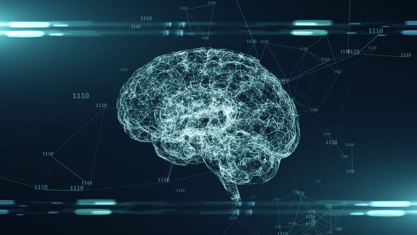

Artificial Intelligence
Artificial intelligence (AI) refers to the simulation of human intelligence in machines that are programmed to think like humans and mimic their actions. The term may also be applied to any machine that exhibits traits associated with a human mind such as learning and problem-solving.
The ideal characteristic of artificial intelligence is its ability to rationalize and take actions that have the best chance of achieving a specific goal. A subset of artificial intelligence is machine learning, which refers to the concept that computer programs can automatically learn from and adapt to new data without being assisted by humans. Deep learning techniques enable this automatic learning through the absorption of huge amounts of unstructured data such as text, images, or video.
